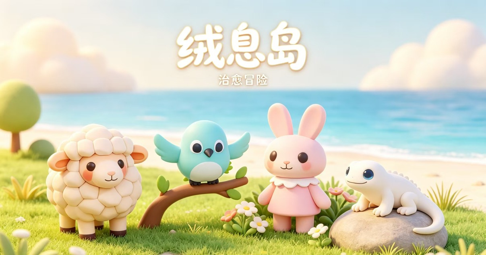
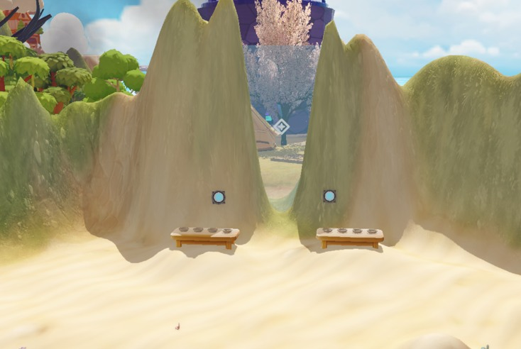
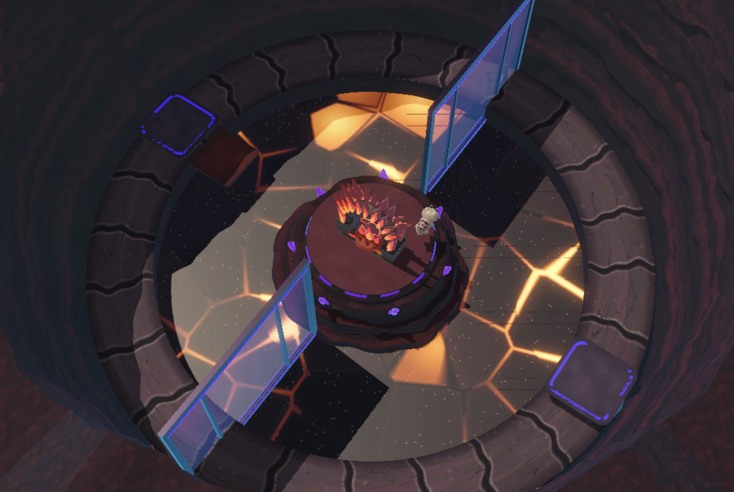

故事与我的分工
两名玩家从沙滩的大钟出发，跟随动物的线索探索小岛，最后救出蜥蜴，回到沙滩修复大钟。
我负责故事主线、角色对话、任务流程与双人机关设计，并借助 AI 把构思做成可游玩的场景和机关。
百校造百岛 · 双人合作解谜
从一次敲钟，到一座岛复苏。

两名玩家从沙滩的大钟出发，跟随动物的线索探索小岛，最后救出蜥蜴，回到沙滩修复大钟。
我负责故事主线、角色对话、任务流程与双人机关设计，并借助 AI 把构思做成可游玩的场景和机关。


治愈古树后，玩家从小鸟那里得到滑翔羽毛。到了天空岛，羽毛能帮助他们接近云团羊，把森林任务和后续关卡连在一起。